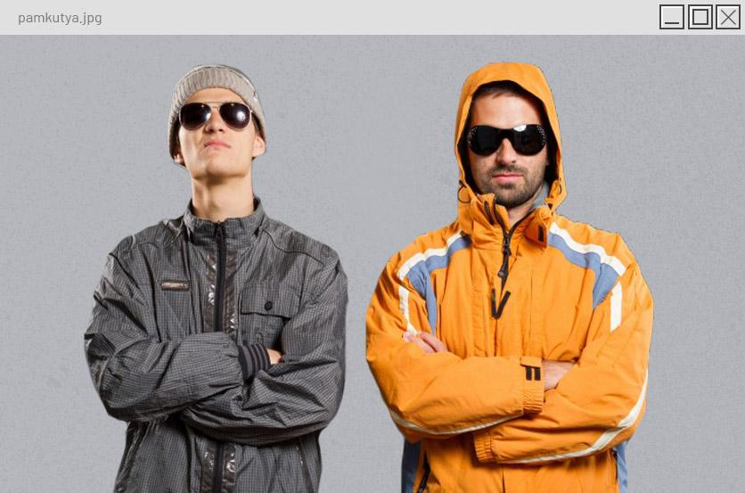

Kezdetben a srácok a kutyájukkal csináltak videókat, majd később paródia zenéket csináltak meglévő
slágerekből. Nagyon sok emberhez eljutottak ezek a videók, van amin több, mint 45 millió megtekintés is
van. Régebben viccelődtek azzal, még 2015-ben, hogy lehet csinálnak egy koncertet a Papp László
Arénában, de utána erről már nem volt szó későbbi videókban.
Viszont pár hónapja elkezdtek megjelenni TikTok videók arról, hogy szeretnének az emberek egy Pamkutya koncertet és egy mémmé vált ez az egész. Petíciókat indítottak, AI által generált videókat csináltak a koncertről és mindenhol terjesztették a hírt. Ez természetesen eljutott a Pamkutyáékhoz is. A páros jelentkezett egy TikTok rövidvideóban, hogy látják a nagy mozgalmat, nem ígérnek semmit, de lehet, hogy lesz koncert. A videó a szövegre kattintva található meg